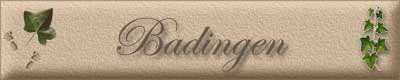

|
|
|
Badingen
Ortseingang von Badingen
Kirche von Badingen
Pfarrhaus Badingen
Panorama von Badingen |

Das Dorf Badingen wird unter dem Namen „Waddigo“ erstmals um das Jahr 980 urkundlich erwähnt, als Papst Benedikt VII. das Benediktiner Mönchskloster zu Arneburg bestätigte. Im Jahre 1331 wohnten die Knappen Hinrich von Ronstede und Fritze Dequede in “Bondinghe”. Das Landbuch Karls IV. um 1375 angelegt, hält fest, dass von den insgesamt 46 Jufen der Feldmark Friedrich Deqwede 8, der Pfarrer 2, das Kloster Neuendorf 4 und die von Ronstede 3 besaßen. Im Jahre 1431 traten die “Deqweden” denen “von Ronsteten” einen großen Teil ihres Besitzes und ihrer Rechte in Badingen ab. Im Jahre 1748 gab es nicht weniger als zehn adlige Höfe in Badingen. Alle diese Höfe waren im weiteren Verlaufe des 18. Jahrhunderts durch Erbgang und Kauf zu einem einzigen Rundstedtschen Gute vereinigt worden. In den Jahren 1837 bis 1839 errichtete Werner Ludolf Otto von Rundstedt, der bis dahin in Schönfeld gewohnt hatte, im Osten des Dorfes ein neues Wohnhaus und einen Wirtschaftshof, um sein größtes und ertragsreichstes Gut besser bewirtschaften zu können. Der einflügelige klassizistische Ziegelputzbau mit Mittelrisalit hat 7 Achsen und eine Geschossfläche von 400 qm. Er ist teilweise in Fachwerkbauweise auf einem Feldsteinfundament errichtet. Über einen hohen Sockelgeschoss befinden sich Hauptgeschoss und Mezzanin, darüber ein Satteldach. Im Innern stellen die Säulen der Halle und sparsamer Stuck an den Decken des Hauptgeschosses den einzigen Schmuck dar. Mit Ausnahme einiger Kellerräume mit Ziegelgewölbe hat das Haus Holzbalkendecken. Das Biberschwanzdach wird von gegenwärtig noch sieben Schornsteinen durchbrochen, früher waren es mehr. Über die Jahrhundertwende wurde das Haus grundlegend umgebaut. Nach dem Tode Werner von Rundstedts im Jahre 1922, wurde das Schloss von der Familie nicht mehr regelmäßig bewohnt, zunächst von der Gutsverwaltung mit benutzt und schließlich vermietet. In den 30er Jahren war weiblicher Reichsarbeitsdienst darin einquartiert, gegen Kriegsende die Eisenbahndirektion Kiew. Badingen, das bei Kriegsende zunächst von den Amerikanern besetzt worden war, wurde gemäß einer Absprache unter den Alliierten an die Sowjetunion übergeben. Nachdem die heute wieder in Schönfeld ansässige Familie von Rundstedt enteignet und ausgewiesen worden war, wurde das Schloss für eine kurze Zeit Erholungsheim für Angehörige der Roten Armee. Schon 1946 wurde es aber teils als Schule, teils als Heim für Kriegswaisen genutzt. Schließlich wurde es dem Kreise Stendal zur Nutzung übergeben, der darin das Kinderheim “Geschwister Scholl” betrieb. In die Kinderheimzeit fällt ein Schrankbrand, der durch ein undichtes Ofenrohr verursacht worden war, und glücklicherweise rechtzeitig gelöscht werden konnte. Als einst ein Kätzlein auf dem Dachboden in einen Spalt gefallen war, stellt sich heraus, dass Gipssäulen in Treppenhaus teilweise hohl sind. Man konnte es unten im Treppenhaus in einer Säule miauen hören und ihm aus einem herabgelassenen Seil heraushelfen, so die Heimüberlieferung. Das Heim wurde 1983 geschlossen, ohne einer neuen Nutzung zugeführt zu werden. Das Inventar wurde teilweise entwendet, teilweise von Eindringlingen zerstört. Infolge unwirksamer Dachentwässerung durch verschmutze Rinnen und abgebrochene Fallrohre kam es zu großflächigen Putzschäden und Durchfeuchtung des Mauerwerkes bis zur Abplatzung des Innenputzes. Durch die eingeworfenen Fenster drang ungehindert das Wetter ein. Der Verfall der Terrassen- und Treppenanlagen wirkte sich besonders im Sockelbereich aus. Seit dem Jahre 1995 setzt die Familie Dequin das Haus und den Park wieder in Stand. Der 7 Hektar umfassende Park wurde zur Bauzeit des Hauses vom königlichen Gartendirektor Peter Joseph Lenné entworfen.
|